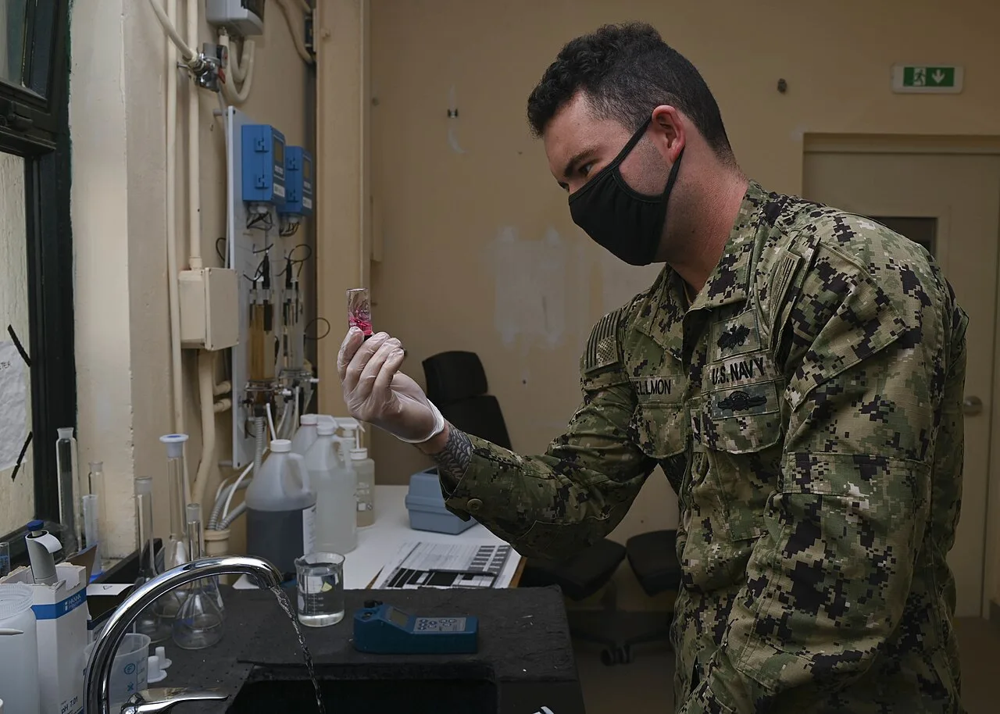

검출됐다는 말만으로는 부족합니다

PFAS는 잘 분해되지 않아 “영원한 화학물질”이라고 불립니다. 이 표현은 경각심을 주지만, 식수 정책은 표현만으로 움직일 수 없습니다. 어떤 PFAS가 얼마나 검출됐는지, 반복 측정에서도 같은 수준인지, 계절과 수원 변화에 따라 달라지는지 확인해야 합니다. 한 번의 검출은 신호이고, 반복된 데이터는 정책의 출발점입니다.
과학적으로 어려운 점은 PFAS가 하나의 물질이 아니라는 점입니다. PFOA, PFOS, PFHxS처럼 이름이 다른 물질은 독성, 이동성, 제거 난도가 다릅니다. 또 분석 장비의 검출 한계가 낮아질수록 예전에는 보이지 않던 농도까지 보입니다. 그래서 “나왔다”보다 “어떤 물질이 어느 수준으로 지속적으로 나왔나”가 더 중요합니다.
기준은 건강과 비용의 경계입니다
식수 기준은 과학적 위험 평가와 현실적인 처리 능력 사이에서 만들어집니다. 기준을 낮추면 건강 보호 수준은 높아지지만, 수도사업자는 더 비싼 처리 시설을 갖춰야 합니다. 활성탄, 이온교환, 고압막 같은 기술은 효과가 있지만 설치와 운영 비용이 큽니다. 특히 작은 지방 수도시설은 비용 부담이 더 크게 느껴집니다.
기준을 정하는 일은 단순히 숫자를 고르는 일이 아닙니다. 누가 검사 비용을 내고, 오염 원인자는 어떻게 책임지고, 처리 부산물은 어떻게 폐기하며, 가정용 필터 정보는 어떻게 안내할지까지 포함합니다. PFAS 정책이 어려운 이유는 건강 문제와 인프라 비용이 같은 문장 안에 들어오기 때문입니다.
제거는 끝이 아니라 이동입니다
PFAS를 물에서 제거하면 문제가 사라지는 것처럼 보이지만 실제로는 위치가 바뀝니다. 활성탄에 흡착된 PFAS, 농축수에 모인 PFAS, 폐기 과정에서 남은 PFAS를 어떻게 처리할지 정해야 합니다. 물에서는 낮아졌지만 폐기물과 토양으로 옮겨가면 장기 위험은 남습니다. 제거 기술의 성과는 처리 후 부산물까지 봐야 합니다.
또 모든 지역에 같은 기술을 적용할 수 없습니다. 지하수인지 표류수인지, 유기물 농도가 높은지, 기존 정수장 구조가 어떤지에 따라 처리 효율이 달라집니다. 과학 기사에서 신기술이 좋아 보여도 현장에서는 유지보수와 필터 교체 주기, 에너지 비용, 폐기물 처리 계약이 더 큰 변수가 됩니다.
신뢰는 지도와 숫자에서 나옵니다
식수 문제에서 신뢰를 만들려면 위험을 숨기지 않는 공개가 필요합니다. 지역별 검사 결과, 기준 초과 여부, 재검사 일정, 임시 조치, 장기 공사 계획을 쉽게 볼 수 있어야 합니다. 숫자만 던지면 불안이 커지고, 안심하라는 말만 반복하면 불신이 커집니다. 주민에게 필요한 것은 판단 가능한 정보입니다.
이 글은 의료 조언이 아닙니다. 개인 건강 우려가 있으면 지역 보건당국과 전문가 상담을 함께 확인해야 합니다. 다만 사회적으로는 공포보다 절차가 중요합니다. PFAS 대응은 오염원을 찾고, 반복 측정하고, 기준을 정하고, 제거 비용을 배분하고, 결과를 공개하는 긴 과정입니다. 안전한 물은 좋은 의도보다 꾸준한 측정에서 나옵니다.
측정값을 알아야 불안을 줄일 수 있습니다
PFAS가 불안한 이유는 이름이 낯설어서만이 아닙니다. 잘 분해되지 않고 오래 남는 특성 때문에 식수, 토양, 생활용품을 함께 봐야 합니다. 다만 모든 PFAS 검출이 같은 위험을 뜻하지는 않습니다. 어떤 물질이 어느 농도로, 얼마나 오래 노출되었는지를 구분해야 실제 대응이 가능합니다.
식수 문제에서 첫 단계는 측정입니다. 검사 방법이 달라지면 검출되는 물질 수와 수치가 달라질 수 있습니다. 지방정부나 수돗물 사업자가 어떤 항목을 검사했는지, 검출 한계가 어디까지인지, 계절별로 차이가 있는지 공개해야 주민이 상황을 이해할 수 있습니다. 숫자 없는 안심도, 숫자 없는 공포도 오래 가지 못합니다.
제거 기술은 비용과 함께 봐야 합니다. 활성탄, 이온교환, 역삼투압 같은 방식은 효과가 있지만 설치비와 유지비가 듭니다. 필터를 제때 교체하지 않으면 성능이 떨어지고, 처리하고 남은 폐기물도 관리해야 합니다. 작은 지자체일수록 기술보다 운영비가 더 큰 부담이 될 수 있습니다.
가정용 정수기는 보조 수단입니다. 모든 제품이 같은 PFAS 제거 성능을 갖는 것은 아니며, 인증 기준과 교체 주기를 확인해야 합니다. 특히 임신부, 영유아, 특정 질환이 있는 사람은 지역 수돗물 자료와 전문가 안내를 함께 확인하는 편이 안전합니다. 불안을 줄이는 방법은 비싼 제품을 바로 사는 것이 아니라 노출 경로를 좁히는 것입니다.
앞으로 중요한 것은 책임의 배분입니다. 오염을 만든 기업, 규제 기관, 수돗물 공급자, 소비자가 각각 어떤 비용을 부담할지가 논쟁이 됩니다. 과학은 위험을 측정하지만, 정화 비용은 사회가 나눠야 합니다. 그래서 PFAS 논의는 화학물질 하나의 문제가 아니라 공공 인프라와 신뢰의 문제로 이어집니다.
관련 영상
PFAS, explained
PFAS 논쟁의 핵심은 “위험하다”에서 끝나지 않습니다. 어떤 물질을 어느 수준까지 줄일지, 그 비용을 누가 부담할지, 제거 후 남은 물질을 어떻게 처리할지까지 답해야 식수 신뢰가 생깁니다.
PFAS 문제는 불안을 키우는 방식보다 줄이는 방식으로 다뤄야 합니다. 어떤 물질이 검출되었는지, 권고 기준과 얼마나 차이가 나는지, 같은 지역에서 반복 측정했을 때 숫자가 안정적인지 확인해야 합니다. 수치가 높다면 정수 처리와 오염원 차단을 함께 진행해야 하고, 수치가 낮더라도 장기 감시는 필요합니다. 개인은 인증된 필터와 교체 주기를 확인하고, 지역 자료를 꾸준히 보는 것이 현실적인 대응입니다. 과학의 역할은 공포를 대신 말하는 것이 아니라 불확실한 위험을 측정 가능한 과제로 바꾸는 데 있습니다.
정책 결정자는 위험을 낮추면서도 비용을 감당할 방법을 찾아야 합니다. 대도시는 고도 정수 시설을 도입할 여력이 있지만 작은 지역은 같은 방식이 부담스러울 수 있습니다. 국가 단위 지원과 오염자 부담 원칙이 함께 논의되는 이유입니다. 주민에게는 검출 수치, 조치 일정, 대체 식수 계획이 명확히 안내되어야 합니다. 건강 문제는 시간이 지나서야 드러날 수 있으므로 초기 대응의 투명성이 특히 중요합니다.
불확실한 화학물질 문제일수록 공개된 측정과 반복 검사가 중요합니다. 주민이 수치를 이해하고 조치 과정을 볼 수 있으면 불안은 줄고, 필요한 비용을 어디에 써야 하는지도 더 분명해집니다.